SUPER · 16:9 banner mock
Review composition only: 4:1 backdrop band, cutout over gameplay area.
SUPER BANNERS & ULTIMATE SPLASHES · ROUND 2A · 2026-10-16
NARUTO · SHIPPUDEN SAGE-ERA
Super: clones charge through a dusk battlefield toward a Giant Rasengan; Naruto thrusts his palm forward. Ultimate: Four-Tails Naruto roars on all fours in a crimson-black shroud with four chakra tails.

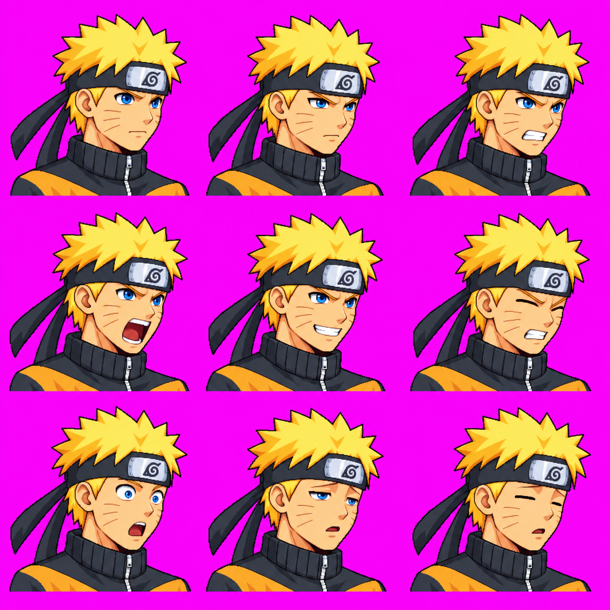
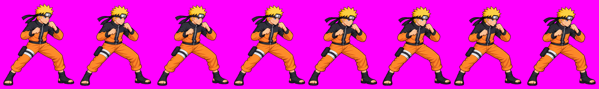


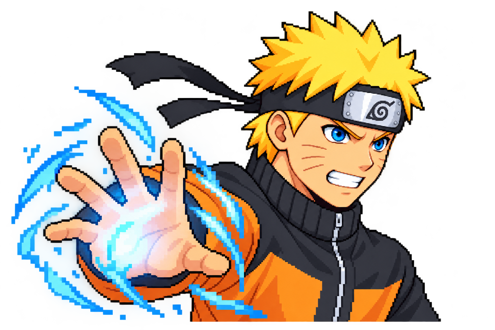
Review composition only: 4:1 backdrop band, cutout over gameplay area.

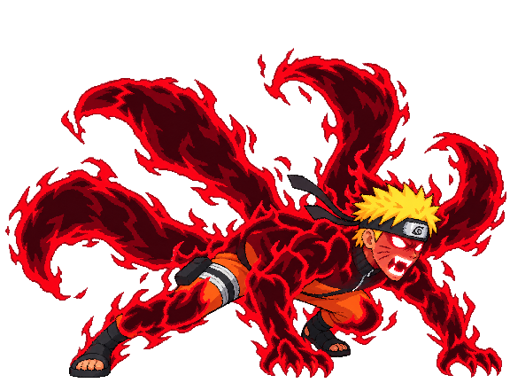
Centered 4:3 phone crop.
Packed-size preview
3× view (pixelated nearest-neighbor) · Open raw 1536×1024 source
Packed-size preview
Astra: clone silhouettes missing; palm points viewer-left. 3× view · Open raw 1536×1024 source
Packed-size preview
Astra: normal hair/skin/clothing remain exposed. 3× view · Open raw 1536×1024 source
KILLUA · GODSPEED ERA
Super: blue-white afterimage streaks and lightning across a night rooftop; Killua raises a claw beside his face. Ultimate: a low, right-facing crouch inside a spiral of electricity.
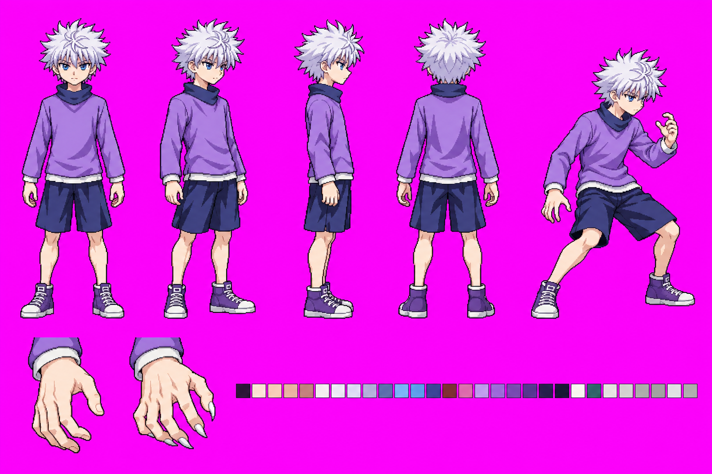


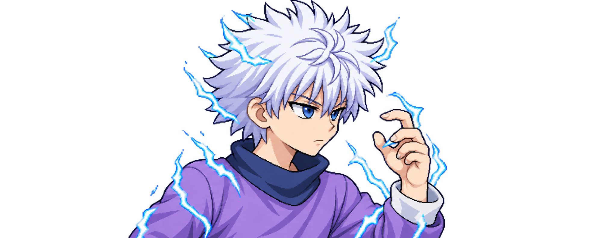
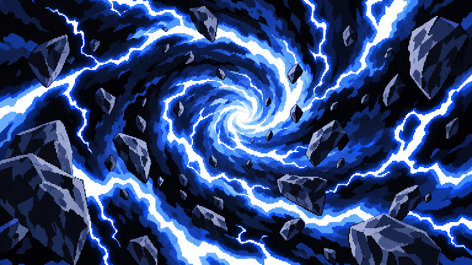
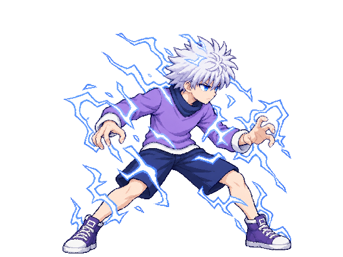
Centered 4:3 phone crop.
Astra identity PASS; bust small at fit and touches top edge. 3× view · Open raw 1983×793 source
Astra identity PASS; aura edges need hard-pixel cleanup. 3× view · Open raw 1536×1024 source
GOJO · BLINDFOLD LOOK
Super: a starfield of white and violet domain lines; Gojo's blindfold is pulled down to reveal Six Eyes while he makes the crossed-finger sign at chest height. Ultimate: Hollow Purple tears through the city; left hand blue and right hand red.


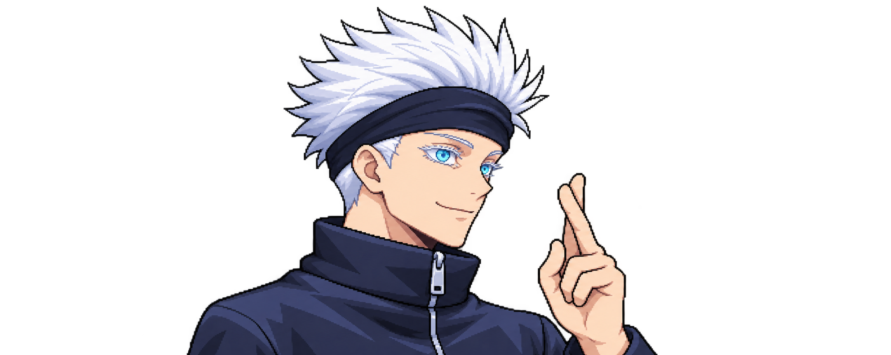
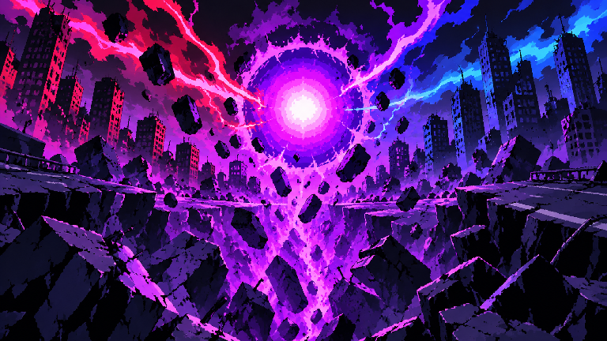
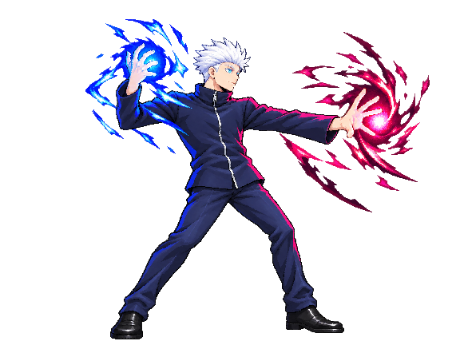
Centered 4:3 phone crop.
Astra: blindfold is raised; gesture is too high. 3× view · Open raw 1983×793 source
Astra: energy hand colors appear reversed; red reads hot pink. 3× view · Open raw 1536×1024 source
All foreground simulations use the exact current packer's trim, contain-fit and bottom-align behavior. Backdrops use its center-crop behavior. The candidate copies live only in this review page; no asset was copied to any character's approved ui/ directory. All images and the package remain subject to review.